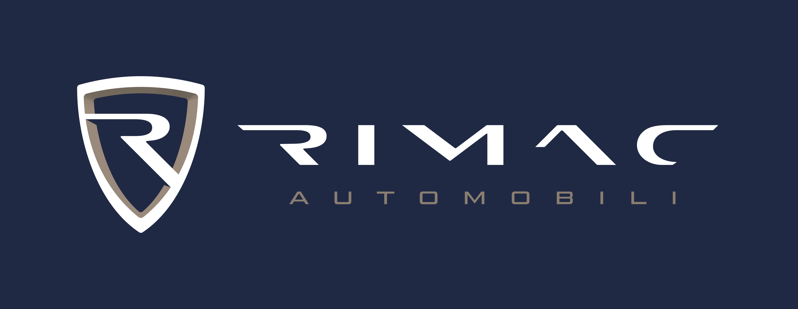
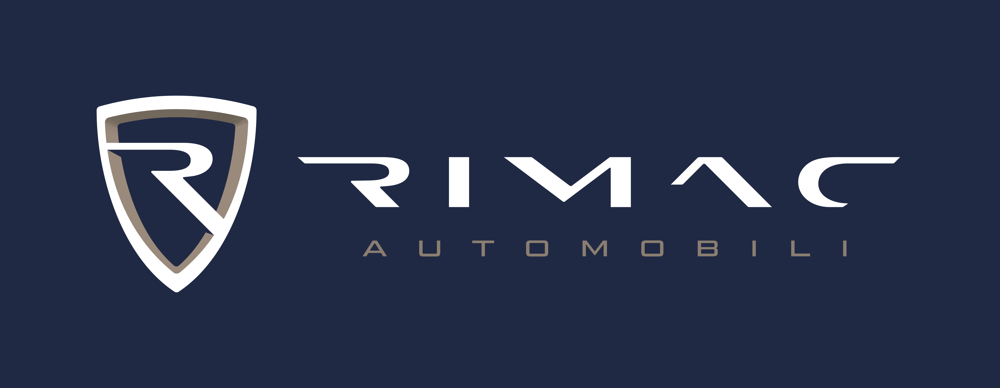
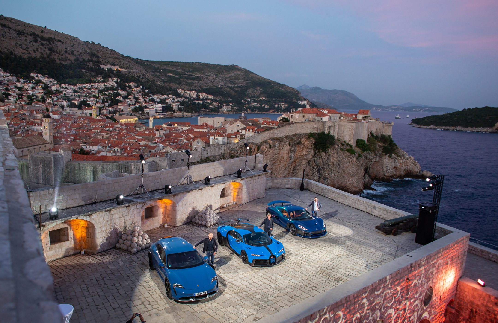
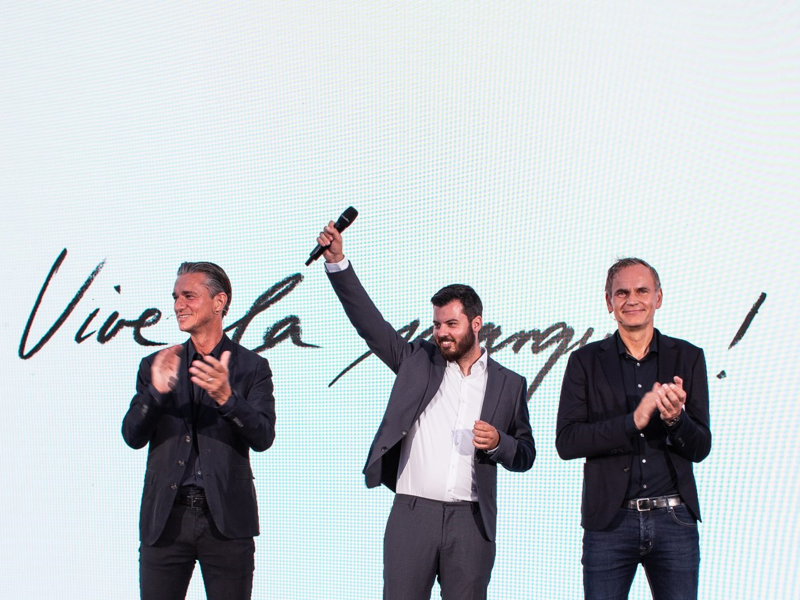
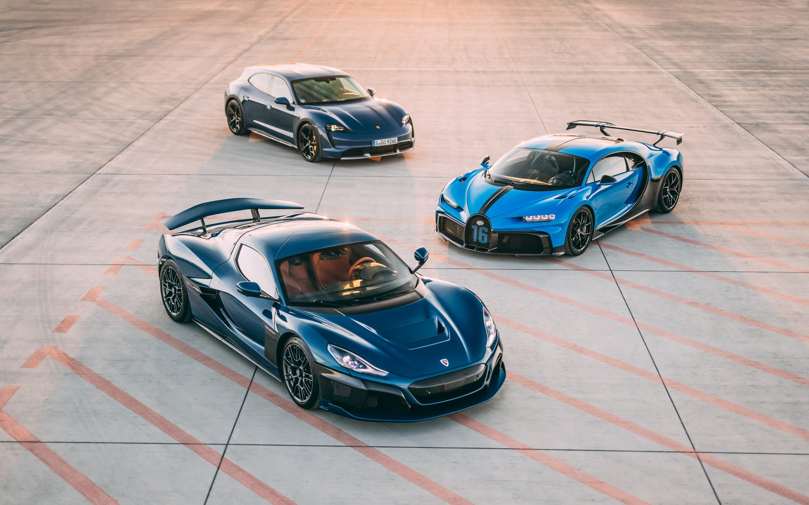
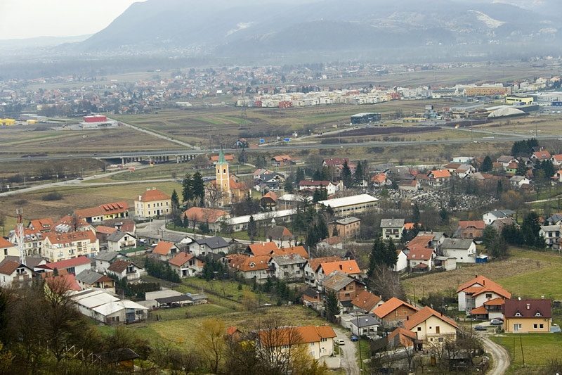
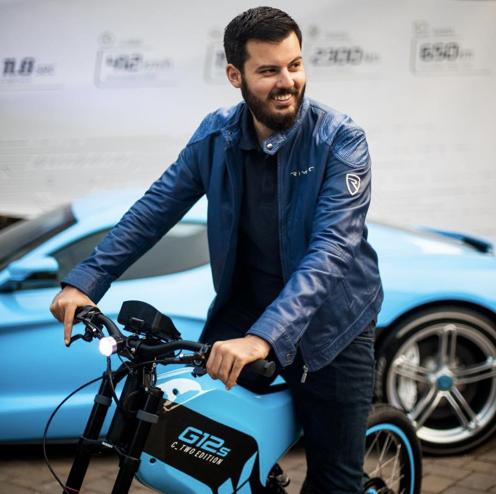
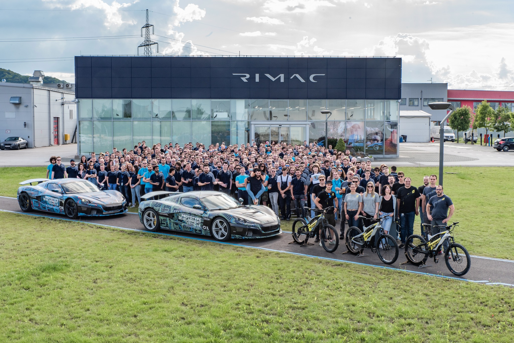

Rimac Automobili
Rimac Automobili je hrvatska tvrtka za proizvodnju električkih vozila osnovana 2009. godine sa sjedištem u Svetoj Nedelji.
Rimac Automobili je razvio i predstavio automobilski koncept električnog
automobila Concept_One, koji je kasnije krenuo u serijsku proizvodnju.
Prvi put je predstavljen svjetskoj javnosti 2011. godine najvećoj
svjetskoj izložbi automobila:
Internationale Automobil-Ausstellung u Frankfurtu.
 

Povijest
Osnivač tvrtke Rimac Automobili je Mate Rimac, koji je pretvorio svoj stari BMW E30 u trkaće električko vozilo.
Prvi primjerak modela Concept_One isporučen je u siječnju 2013. godine španjolskom kupcu, tvrtki Applus+ IDIADA.
Automobil je dovršen u četiri mjeseca, a cijena je nepoznata. Svoj drugi komercijalni model Concept_One koji će
biti proizveden u svega osam primjeraka, Rimac Automobili predstavili su na međunarodnom salonu automobila
u Ženevi 1. ožujka 2016. godine. 14. svibnja 2019. objavljeno da je u
sjedištu Rimac Automobila tvrtka Kia Motors, dio Hyundai Motor Group,
potpisala ugovor o ulaganju u oko 600 milijuna kuna u Rimac Automobile.
Razvijat će električni športski automobil sa središnje smještenim
pogonom športske marke Hyundai N i hibridno vozilo visokih
performanca s pogonom na vodik i električni pogon.
Bugatti-Rimac
Rimac i Bugatti udružuju snage u povijesnom novom poduhvatu
5.srpnja 2021. – DUBROVNIK, Hrvatska – Danas, Rimac Automobili
objavljuje još jednu važnu prekretnicu u svojoj povijesti, udružujući snage
ikoničnom automobilskom markom, Bugatti Automobiles, kako bi stvorili
novu automobilsku i tehnološku supersilu. U samo 10 godina, Rimac
Automobili je napredovao od start-upa u garaži s jednim čovjekom do
objave nove tvrtke s jednom od najprepoznatljivijih automobilskih marki
na svijetu kako bi stvorili Bugatti Rimac d.o.o. U industriji koja se razvija
sve brže, fleksibilnost, inovativnost i održivost ostaju u samom središtu
Rimacove djelatnosti. Brand sa sjedištem u Hrvatskoj dokazao je da ne samo
da može držati korak, već može biti i pionir, postavljajući performanse i
tehnološki standard za druge. Ujedinjenje Rimčeve tehničke stručnosti i
agilnosti s Bugattijevom 110-godišnjom poviješću dizajna i inženjerskog
umijeća predstavlja fuziju vodećih automobilskih umova.
iFrame
| Tip: | Podružnice: | Tvrtke roditelji: | Industrija: | Sjedište: | Ključni ljudi: | Broj zaposlenih: |
| Ujedinjeno poduzeće | Bugatti Automobiles | Rimac Grupa (55%) | Automobilska | Sveta Nedelja, Hrvatska | Mate Rimac (CEO Bugatti Rimca) | 2000+ |
|  |
|
|
 |  |  |  |
| Rimac Automobili | Porsche (45%) | |||||
|
|